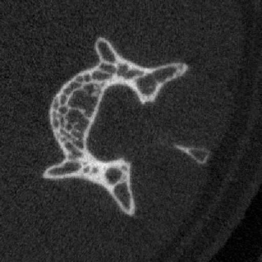
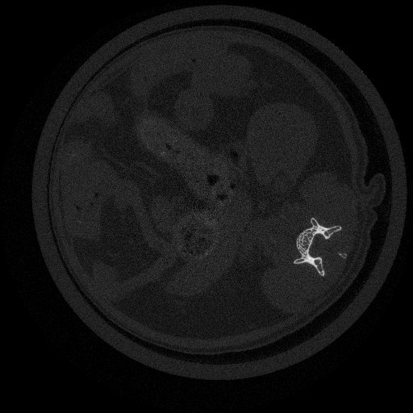
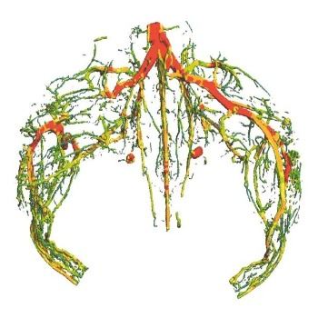
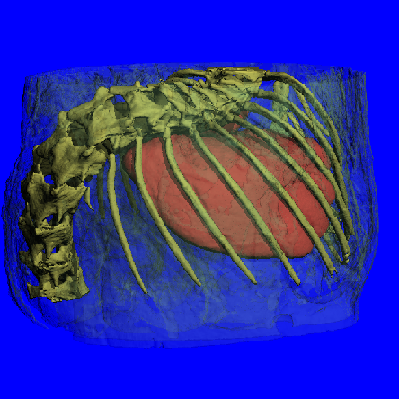
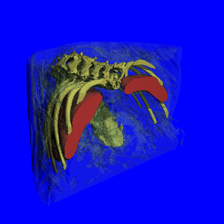
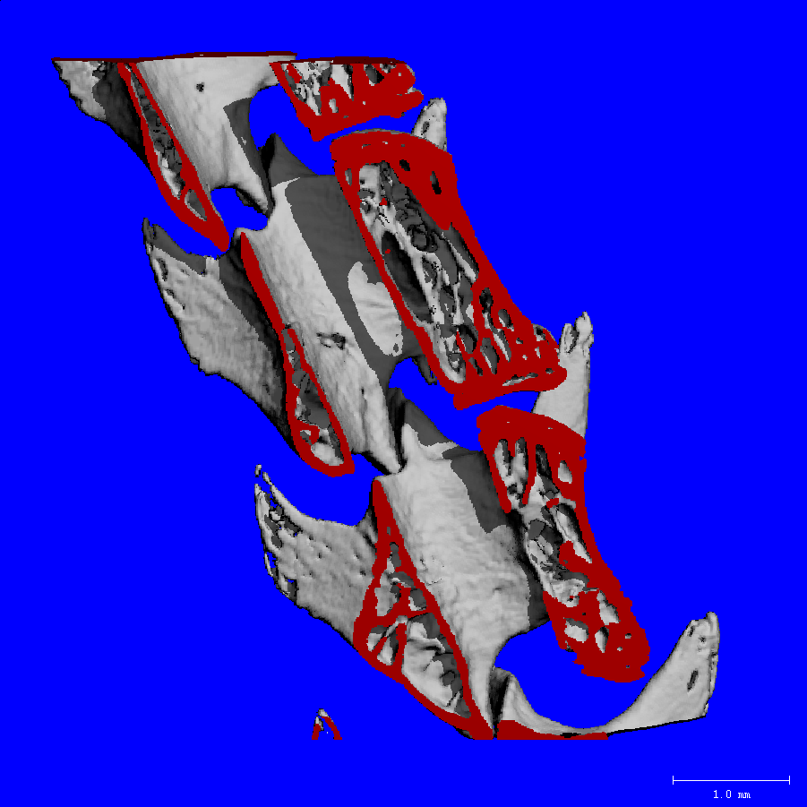
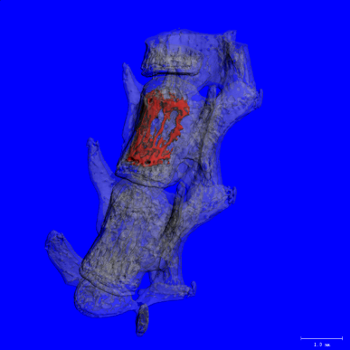
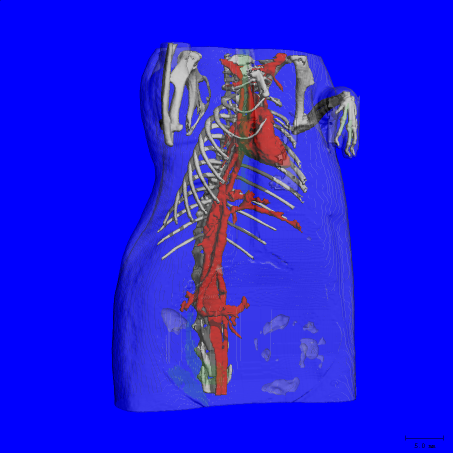

vivaCT 80 活体 microCT 扫描仪

| 类型 |
| ||||||||||
|---|---|---|---|---|---|---|---|---|---|---|---|
| X 射线源 | 密封 风冷 免维护 光斑尺寸为5 µm - 7 µm（4 / 8 W） 30 - 70 kVp （45、55、70 kVp预设并校准） | ||||||||||
| 探测器 | 3720×400像素，48 µm间距，CCD | ||||||||||
| 分辨率 | <14 µm（10% MTF） 3.9 µm - 160 µm标称各向同性（像素尺寸） | ||||||||||
| 图像矩阵 | 512 × 512 - 8192 × 8192 像素 | ||||||||||
| 最大扫描尺寸 | 80 x 145 mm (ØxL) 多次扫描最高可达450mm | ||||||||||
| 最大试样尺寸 | 90 x 500 mm (ØxL) | ||||||||||
| 最短扫描时长 | 20s | ||||||||||
| 电气 | 100 - 230 V / 50 - 60 Hz max. 400 W | ||||||||||
| 尺寸 | 2050 x 1230 x 910 mm（高 x 宽 x 深） | ||||||||||
| 重量 | 400 kg（标准），430kg（加配大动物装置） | ||||||||||
| 可选装 | |||||||||||
| 大动物装置 | 该配置可对小兔等体型较大的实验动物的四肢末端进行扫描 | ||||||||||
| 过滤器更换器 | 加装滤片切换器后，可对 X 射线束的能量谱进行塑形。对于小型且轻质的样本，使用弱滤片能增强软组织的对比度；而较强的滤片可通过降低束硬化效应，提高密度测量的准确性。可选滤片材料包括 0.1 mm 铝、0.5 mm 铝或 0.1 mm 铜。第四个位置为空档，可进行无滤片扫描。 | ||||||||||







